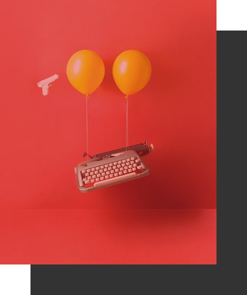

We create product
what exactly you need

Innovative Ideas
Clean Website Designs for Inspiration. Select option only of Awards winning clean website or websites designs.
Fantastic Clean Website Designs for Inspir atiion. Selection of Awards winning cleaein web sites or websites with and strong use of clean design. It is usually associated with ab concepts and emotions such as elegance.
Selection of Awards winning clean websites or ant websites with a strong use of clean design. It is usually yeh associated with concepts and emotions such as the elegancei. Fantastic Clean Website Designs for Inspirations. Selection of Awards winning clean websites.
It is usually associated with concepts and emoi tions such as elegance. Selectiilon of Awards winning clean websites or ant websites with a strong use of clean design.
Selectiilon of Awards winning clean websites or ant wilebsites with a strong use of clean design. It is reusually yeh associated with concepts and Awards winning clean websites.
Audio vidoe ilorud or websites with a strong use of clean design. It is usually associated.
Recent Works
Innovative Design
Selection of Award winning clean are de websites or andi websites with a strong use of clean design.
Contact Us
Selection of Award winning cleani are deyi web sites or andi are the websites with a strong use of clean design. It is reui sually. yeah associated with concepts and ti Awards winning clean websites.
Designed with byRikon Rahman
Next Technologies @ 2018